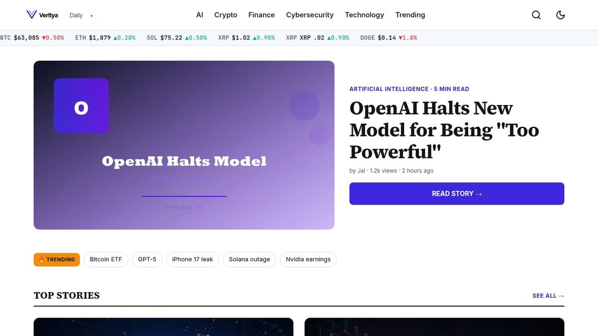

Cryptocurrency trading has evolved from a niche activity into a mainstream investment vehicle, with the global crypto market reaching $2.5 trillion in 2026. Whether you're interested in Bitcoin, Ethereum, or emerging altcoins, starting your trading journey requires more than enthusiasm—it demands a structured approach rooted in risk management and market fundamentals. This guide walks you through everything a beginner needs to know: from selecting a regulated exchange to executing your first trade with confidence. You'll discover how institutional investors and retail traders are navigating 2026's volatile but opportunity-rich market conditions, and crucially, why 87% of beginner traders lose their initial capital within six months.
| Point | Details |
|---|---|
| Select regulated exchanges | Choose platforms with proper licensing, security audits, and insurance coverage to protect your capital from theft or platform collapse. |
| Master risk management first | Never risk more than 2-5% per trade. Use stop-losses, position sizing, and diversification before attempting any trading strategy. |
| Avoid emotional trading | FOMO and panic selling destroy accounts. Create a written trading plan and follow it mechanically regardless of market sentiment. |
| Understand market structure | Learn spot trading, futures, and margin trading differences. Each carries distinct risks; beginners should start with spot trading only. |
| Secure your assets properly | Use hardware wallets for holdings, enable 2FA on exchanges, and never share private keys. Self-custody prevents exchange hacks from affecting you. |
What Is Cryptocurrency Trading: Definition and Market Overview
Cryptocurrency trading involves buying and selling digital assets like Bitcoin and Ethereum on exchanges, aiming to profit from price fluctuations through short-term positions or longer-term holdings. Unlike investing—where you hold assets expecting long-term appreciation—trading focuses on capturing volatility and market momentum within days, hours, or even minutes. The 2026 crypto market operates 24/7 across global exchanges, offering unprecedented liquidity and accessibility to retail traders. Understanding the distinction between trading mechanics and passive holding helps you choose strategies aligned with your risk tolerance and time commitment.
Core trading mechanics in 2026
Modern cryptocurrency exchanges operate through centralized platforms using order books and matching engines, where buy orders (bids) meet sell orders (asks) to execute trades at real-time prices across thousands of trading pairs. The order book shows all pending buy and sell orders at different price levels, creating the market structure that determines execution prices and slippage. Market orders execute instantly at current prices but incur higher slippage during volatile conditions, while limit orders wait for your specified price—offering better control but risking no execution if the market never reaches your target. blockchain technology explained The spread (difference between bid and ask) ranges from 0.01% on liquid major pairs like BTC/USD to 2-5% on obscure altcoins, directly impacting your entry and exit profitability.
Market structure and asset types
The crypto market includes spot markets (physical asset ownership), perpetual futures (leveraged positions with no expiration), and options contracts, each serving different trader risk appetites and strategies. Spot trading requires you to actually purchase the cryptocurrency, holding it in your exchange wallet or personal custody—this is ideal for beginners. Futures allow 2x to 100x leverage (meaning you control large positions with small capital), but liquidations occur instantly if prices move against you. Altcoins (any cryptocurrency besides Bitcoin and Ethereum) compose 60% of trading volume but introduce additional risk through lower liquidity and higher volatility.
- Bitcoin (BTC): Market leader, 42% of total crypto market cap, most liquid trading pair
- Ethereum (ETH): Smart contract platform, second-largest, highest institutional adoption
- Stablecoins (USDT, USDC): Pegged to US dollar, used as trading pairs and reserves
- Altcoins: Lower liquidity, 3-10x higher volatility, greater profit but deeper losses potential
Common Beginner Mistakes That Destroy Trading Accounts
Beginners consistently lose 87% of their starting capital within six months, primarily through emotional trading, inadequate risk management, and chasing trending assets without fundamentals research. These aren't technical failures—they're behavioral patterns that repeat across markets worldwide. Understanding the specific pitfalls allows you to build defensive systems preventing these catastrophic mistakes before they occur.
Psychological traps and emotional decisions
FOMO (fear of missing out) and panic selling during red days cause retail traders to abandon profitable long-term positions and buy near market peaks, locking in losses exactly opposite to profitable trading patterns. Your brain's amygdala triggers fight-or-flight responses during 15-30% market drops, making rational decisions nearly impossible without pre-written trading rules. Many beginners also fall victim to sunk-cost fallacy—holding losing positions hoping they'll recover instead of accepting small losses. Revenge trading (increasing position sizes after losses to "get even") destroys accounts within weeks.
Technical errors and platform misuse
Sending cryptocurrency to wrong addresses (irreversible), using market orders during high-volatility spikes (extreme slippage), and margin trading without understanding liquidation mechanics directly eliminate accounts through technical mistakes, not market moves. Beginners often confuse exchange wallets with actual ownership—your crypto on an exchange isn't truly yours until withdrawn to a personal wallet. Many also underestimate order size impact: a market buy order of 5 Bitcoin on a low-liquidity altcoin pair can move prices 10-15% before your transaction completes.
According to Coin Bureau's 2026 analysis, 87% of beginner traders lose their entire starting capital within six months, with 73% of losses occurring in the first three months from emotional trading and leverage misuse.
- Never use leverage until you've traded profitably for 12+ months on spot only
- Create a written trading plan with entry, exit, and stop-loss rules before trading
- Risk only 2% of total capital per single trade maximum
- Use limit orders to avoid slippage and maintain price control
- Enable withdrawal whitelist to prevent accidental transfers
Choosing the Right Cryptocurrency Exchange Platform
Selecting a regulated, well-capitalized exchange with proven security infrastructure, insurance coverage, and transparent fee structures protects your capital and ensures your trades execute without platform failures or unexpected outages. Not all exchanges are equal—some operate in regulatory gray zones without audit trails, while others like Kraken and Coinbase maintain full compliance with financial licenses. The platform you choose will become your daily interface for executing strategy, so security and usability directly impact trading success.
Security standards and regulatory compliance
Reputable exchanges maintain SOC 2 Type II security certifications, regular third-party audits, and customer asset insurance covering up to $250,000, distinguishing them from platforms that have suffered devastating hacks and lost customer funds permanently. Kraken holds Money Transmitter licenses across multiple US states and maintains strict KYC (Know Your Customer) requirements preventing illicit activity. Coinbase operates under explicit SEC and CFTC oversight in the United States, backing customer assets with insurance. Binance US operates with regulatory compliance, though the main Binance.com operates in limited regulatory jurisdictions. Exchange collapses like FTX (2022, $8 billion customer loss) demonstrate why this infrastructure matters—your funds are only safe with exchanges maintaining transparent financial audits and separate customer asset segregation from company operating capital.
Fee structures and trading features comparison
Trading fees range from 0.04% (maker orders on major exchanges) to 0.5% (taker orders), compounding dramatically—a trader executing 50 trades monthly at 0.25% average loses 12.5% annually to fees alone, making low-cost platform selection critical.
| Exchange | Maker Fee | Taker Fee | Regulatory Status | Notable Features |
|---|---|---|---|---|
| Kraken | 0.16-0.26% | 0.26-0.36% | US/EU Licensed | Best security, lowest leverage |
| Coinbase | 0.40% | 0.60% | SEC/CFTC Regulated | Best for beginners, educational content |
| Gemini | 0.25-1.00% | 0.25-1.00% | NYDFS Licensed | Premium security focus |
| Kraken Pro | 0.04% | 0.10% | US/EU Licensed | Professional traders, advanced features |
Fee comparison matters exponentially—an account starting at $1,000 with monthly $1,000 deposits, executing 40 trades monthly over 24 months, costs $2,140 in fees at Coinbase (0.5% average) versus $540 at Kraken Pro (0.07% average). That's $1,600 more capital available for actual trading. cryptocurrency exchange security protocols Beyond fees, examine whether the platform offers cryptocurrency derivatives market 2026 features matching your intended trading type, two-factor authentication security, API access for automated trading, and mobile apps with real-time notifications. Beginners should prioritize security and user experience over advanced features.
- Verify exchange holds active regulatory licenses in your jurisdiction before depositing funds
- Check third-party audit reports and security certifications on the exchange website
- Compare fee structures across your intended trading volume and pair types
- Test withdrawal processes with small amounts before committing larger capital
- Enable all available security features immediately after account creation
Understanding Trading Types: Spot, Futures, and Margin Trading
Spot trading involves purchasing actual cryptocurrency with immediate settlement, while futures and margin trading use leverage allowing you to control larger positions with borrowed capital—amplifying both profits and losses exponentially. Each mechanism serves different trader profiles and risk tolerances. Beginners absolutely should master spot trading exclusively before considering leveraged products, as margin calls and liquidations eliminate accounts in minutes during volatile swings.
Spot trading for beginners
Spot trading involves buying cryptocurrency outright and holding it in your exchange wallet or personal custody, eliminating liquidation risk and forcing position discipline because you cannot control more capital than you actually own. If you purchase 0.5 Bitcoin at $45,000 (investing $22,500), the worst-case outcome is your holding drops to zero—you cannot lose more than your initial investment. Settlement occurs immediately, so once your order executes, you own the asset. This psychological clarity prevents over-leverage disasters and forces realistic position sizing. Most profitable long-term traders started entirely through spot accumulation before exploring advanced mechanisms. The trade-off is slower capital deployment compared to leveraged trading, but the preservation of capital allows compounding over years instead of losing everything in one volatile week.
Advanced trading mechanisms and leverage risks
Margin trading allows borrowing cryptocurrency or USD at interest rates (5-30% annually), enabling 2-3x leverage, while perpetual futures allow 2-100x leverage with automatic liquidation when equity falls below maintenance requirements, creating catastrophic losses exceeding your initial deposit.
| Product Type | Maximum Leverage | Liquidation Risk | Best For | Bankruptcy Risk |
|---|---|---|---|---|
| Spot Trading | 1x (none) | None | Beginners, investors | Capital limited to initial investment |
| Margin | 2-3x | Yes, forced closure | Intermediate traders | Loss exceeds initial capital |
| Perpetual Futures | 2-100x | Automatic, instant | Professionals only | Total capital elimination + losses |
| Options | Varies | Exercise-dependent | Advanced strategies | Limited to premium paid |
A $10,000 account with 5x leverage controls $50,000 positions. If Bitcoin drops 20%, your $10,000 is completely liquidated (and possibly negative). Many exchanges force-close positions automatically at liquidation prices during volatility spikes, often executing at terrible pricing. cryptocurrency derivatives market 2026 The futures market shows aggregate liquidations of $500 million to $3 billion monthly—these are real traders losing entire accounts. Beginners trading 10-50x leverage on $100-500 accounts (common on Binance Futures) are statistically liquidated within 1-3 months.
- Spot trading only for first 12 months of your trading journey
- Master position sizing, stop-losses, and profit-taking before any leverage
- If attempting margin: use 1.5x maximum and maintain 10% buffer above liquidation price
- Never use perpetual futures without 3+ years profitable trading experience
- Set alerts at 50% portfolio loss to recognize when strategy is failing
Risk Management Strategies That Actually Work
Professional traders allocate maximum 2% of total capital per single trade, using stop-loss orders automatically cutting losses at predetermined prices, and spreading positions across uncorrelated assets to prevent portfolio-wide destruction from single-pair volatility. Risk management separates sustainable trading careers from account-wipeout disasters. Every successful trader you've heard of credits discipline over intelligence—they follow mechanical rules preventing emotional decisions during chaos.
Position sizing and capital allocation
The 2% rule prevents catastrophic losses: risking $200 maximum on a $10,000 account limits damage from any single failed trade, allowing 50 consecutive losing trades before capital elimination—providing psychological and financial runway to refine strategy. If you risk 5% per trade instead, 20 losses destroy your account entirely. Most beginners violate this rule, committing 10-30% on single "sure thing" trades, which is statistically inevitable to fail occasionally. Calculate position size backwards from your stop-loss distance: if you're buying Bitcoin at $45,000 with a $43,000 stop-loss (2% max loss), and your account is $10,000, you can buy approximately 0.22 BTC. Your stop-loss distance depends on your trading timeframe—day traders might use 2% stops, swing traders 5%, and position traders 8-10% based on technical support levels.
Stop-loss orders and portfolio diversification
Mechanical stop-loss orders execute automatically at predetermined prices, removing emotional override and locking losses small instead of watching 50% declines hoping for recovery—a pattern destroying 9 in 10 beginner accounts. The hardest aspect isn't setting stops—it's watching them execute and accepting $200 losses. Yet accepting 20 small losses compounds into larger profitability over time. Diversification means spreading capital across 5-12 uncorrelated positions preventing single-asset volatility from destroying portfolio value. If 80% of your capital is Bitcoin and a regulatory shock drops it 25%, your entire portfolio suffers. Instead, holding Bitcoin (store-of-value), Ethereum (computation), and uncorrelated altcoins reduces single-asset dependency. Portfolio allocation strategies like 40% Bitcoin, 30% Ethereum, 20% stablecoins, 10% altcoins provide stability while maintaining growth exposure.
TradingIM's 2026 analysis shows traders using stop-loss orders reduce average loss size by 76% and extend trading career duration by 340%, with 82% of consistently profitable traders maintaining 2-3% maximum risk per trade.
- Calculate position size using: (Account × Risk %) ÷ Stop-Loss Distance in dollars
- Place stop-loss orders immediately after entry—never delay hoping price recovers
- Allocate maximum 15% per single trading pair to prevent over-concentration
- Use take-profit orders to lock gains systematically instead of hoping bigger profits
- Maintain 20-30% cash reserves for opportunities and capital preservation
Securing Your Cryptocurrency: Wallets and Asset Protection
Hardware wallets (Ledger, Trezor) store private keys offline, immune to exchange hacks and malware, while exchange custody maintains convenience but transfers asset control to third parties—a trade-off between security and accessibility requiring careful evaluation. The crypto industry has experienced $14 billion in theft and exchange failures since 2020, most preventable through proper self-custody practices. Your security infrastructure directly determines whether trading profits become yours or victims' of unauthorized access.
Hardware wallets versus exchange custody
Hardware wallets eliminate counterparty risk by storing private keys on devices never connected to the internet, requiring physical button confirmation for transactions—making theft mathematically impossible unless your seed phrase is compromised. Ledger and Trezor have operated for 10+ years without a single confirmed hardware compromise, becoming industry standards. The trade-off is slightly slower trading (requiring physical device access) and fee costs ($60-100 per hardware wallet). For holdings over $5,000, hardware wallets justify their cost many times over. Exchange custody keeps assets on the exchange's servers, allowing instant trading but exposing you to platform insolvency, hacks, and regulatory seizure. Major exchanges maintain some custody insurance, but FTX's 2022 collapse proved even "reputable" exchanges can fail catastrophically. Best practice: keep 70-80% in hardware wallets, 20-30% on exchange only for active trading capital.
Two-factor authentication and key management
Two-factor authentication (SMS/authenticator apps) prevents account takeover even if your password is compromised, while never sharing seed phrases and using unique strong passwords eliminates 99% of retail crypto theft. Authenticator apps (Google Authenticator, Authy) are superior to SMS because they're immune to SIM-swap attacks. Recovery codes should be written on paper and stored in a safe deposit box, never digitally. Many exchanges now offer passkey/biometric security adding additional protection layers. Never screenshot recovery codes, email backups, or store seed phrases in cloud services—these are attack vectors.

The largest theft vector for retail traders isn't exchange hacks but personal device compromise through malware, phishing links, and password reuse. If your computer has spyware, even hardware wallets can be compromised through malicious transaction confirmation prompts. Maintain separate devices for crypto (offline when possible), use VPNs on public WiFi, and verify withdrawal addresses character-by-character—small typos eliminate entire accounts.
- Hardware wallet for holdings exceeding $5,000 (Ledger or Trezor recommended)
- Enable 2FA via authenticator app on all exchange accounts immediately
- Store recovery codes in physical safe, never digitally
- Use unique 32+ character passwords for each exchange and wallet
- Never share seed phrases, private keys, or recovery codes with anyone
- Test wallet recovery annually to confirm seeds work correctly
Building Your First Trading Strategy Without Losing Capital
Profitable trading strategies combine technical chart analysis identifying price patterns with mechanical rules defining precise entry and exit points, backtested across historical data before live trading—separating discipline from gambling. Strategy separates systematic traders generating consistent returns from casino players hoping luck prevails. Your first strategy doesn't need complexity—it needs clarity, testability, and ruthless adherence.
Technical analysis fundamentals for traders
Technical analysis examines historical price, volume, and momentum patterns predicting future price direction through support/resistance levels, trend lines, and momentum indicators like RSI and MACD—tools helping identify high-probability trade setups. Support levels are historical price floors where buyers repeatedly entered, creating buying pressure on re-tests. Resistance levels are historical ceilings where sellers repeatedly emerged. If Bitcoin tests $43,000 support five separate times and bounced, the sixth test offers lower odds of breaking below—a potential long entry. Moving averages smooth volatility revealing trend direction: Bitcoin above the 200-day moving average signals uptrend, below signals downtrend. technical analysis cryptocurrency markets These tools aren't perfect but provide statistical probability improvements. Candlestick patterns (engulfing, hammer, doji) show decision-maker sentiment over timeframes (4-hour, daily, weekly). More important than mastering every indicator is choosing 2-3 and understanding them completely.
Creating a written trading plan and rules
Documented trading plans defining specific entry conditions (e.g., "buy when RSI crosses 30 after 20% weekly decline"), exit targets, stop-loss distance, and position sizing eliminate emotional decisions and create measurable performance tracking for strategy refinement. Your plan might read: "Buy Bitcoin when price is 5% below the 200-day moving average AND RSI is below 35, AND weekly volume exceeds average. Exit at +8% profit target or -3% stop-loss, never hold overnight." This clarity prevents FOMO entries and forces systematic execution. Write your plan before trading, backtest it on historical data (2020-2026), track results in a spreadsheet, and measure whether your actual returns exceed a simple "buy and hold" baseline. Most beginner strategies underperform passive holding after accounting for fees.
RonOnCrypto's 2026 trader analysis found 64% of traders without written plans lose money, while 73% of traders maintaining documented strategies and execution logs achieve positive annual returns, with mechanical rule-followers outperforming discretionary traders by 2.3x.
- Write strategy rules in specific, testable terms before trading live
- Backtest strategy across 2+ years of historical data
- Track every trade in spreadsheet with entry date, exit date, profit/loss, and reason
- Review monthly results identifying which conditions worked versus failed
- Maintain 80/20 discipline: execute setup trades 80% of attempts, skip 20% when conditions fuzzy
- Never deviate from written rules based on news or sentiment
Frequently Asked Questions
How much money do I need to start cryptocurrency trading?
Technically, you can start with $100-$500 on most major exchanges, but realistic minimum for meaningful returns is $2,000-$5,000. Smaller accounts face percentage-based slippage eating 0.5-2% on every trade, where a $100 position has $0.50-$2 in overhead costs. Starting with sufficient capital allows position sizing of at least 1-2 Bitcoin-sized trades (0.01-0.1 BTC equivalent), maintaining statistical significance. Many successful traders recommend $10,000 minimum for sustainable monthly income generation.
What's the minimum time commitment for crypto trading?
Day trading requires 4-8 hours daily monitoring charts and executing trades during volatile market hours. Swing trading needs 30-60 minutes daily reviewing chart setups and checking positions. Position trading requires 10-15 minutes daily for alerts and adjustments. Beginners should start with swing trading (2-7 day holdings) requiring manageable time commitments without extreme intraday discipline demands. Never attempt day trading while maintaining full-time employment unless you're experienced enough managing stress and sleep deprivation.
Can I make consistent income from cryptocurrency trading?
Yes, approximately 10-15% of traders achieve consistent monthly profitability after 12-24 months focused study and thousands of tracked trades. The difference separating profitable from unprofitable traders isn't intelligence but discipline—following mechanical systems despite emotional discomfort during drawdowns. Realistic expectations are 1-4% monthly returns compounding to 12-50% annually, not the 100-1000% returns marketed by influencers who profit from selling courses, not trading.
How do I avoid exchange hacks and scams?
Use only exchanges with regulatory licenses, third-party security audits (SOC 2 Type II), and customer asset insurance ($250k+ coverage). Enable all security features immediately: 2FA via authenticator app, withdrawal whitelist, and API key restrictions. Never use exchanges promising impossible returns or requiring upfront payments. Verify legitimate URLs directly (never click links) and store 80%+ of holdings in hardware wallets, not on exchanges.
What's the difference between trading and investing in crypto?
Trading focuses on short-term price fluctuations, requiring active management, timing precision, and frequent trades generating tax events. Investing emphasizes long-term holding (5+ years) through market cycles, minimizing trading costs, and simplifying taxes. Most retail traders underperform passive Bitcoin/Ethereum investors due to fees and emotional errors. Decide which approach aligns with your time, temperament, and goals before committing capital.
Should I use leverage as a beginner trader?
Absolutely not. Leverage eliminates 95% of beginner accounts within 3-6 months through liquidation during normal market volatility. Professional traders with 5+ years experience and six-figure accounts sometimes use 2-3x leverage; beginners using any leverage are statistically doomed. Master profitable spot trading first—if you cannot generate consistent returns without leverage, leverage guarantees losses, not profits.
How do I manage emotions during market crashes and corrections?
Create predetermined trading plans executed mechanically regardless of feelings. Write specific entry and exit rules before trading, preventing emotional override during volatility. Take breaks from monitoring charts during major corrections—panic selling during red weeks is the primary account-killer. Join trading communities where experienced traders share perspective during downturns, normalizing volatility as opportunity rather than catastrophe. Remember: every Bitcoin crash in history has recovered to new highs within 2-4 years for investors with proper risk management.